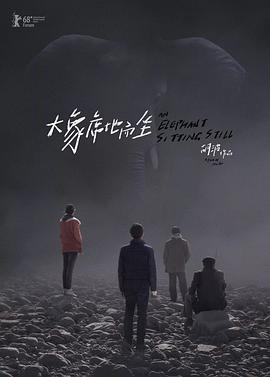

大象席地而坐
又名：金羊毛 / 爱在樱花盛开时 / An Elephant Sitting Still
光是揭露问题就已经很棒了，有一点个人的风格了。可惜啊。结尾部分与剧本出入很大，最后韦布与黄玲对话的A与B段都没有保留。同时少了抢毽子时韦布委屈的哭，但多了后面行驶列车下的脏脏呐喊。最后最后的象鸣声太像哭泣了。于城之所以想放韦布走大概是他想着能给兄弟赎点罪，也明明他最想着去看大象，结果就他没去成。
作品信息
| 导演 | 胡波 |
| 编剧 | 胡波 |
| 主演 | 彭昱畅 / 章宇 / 王玉雯 / 李丛喜 / 董向荣 / 王柠 / 赵燕国彰 / 朱颜曼滋 / 凌正辉 / 王超北 / 王雪洋 |
| 类型 | 剧情 |
| 制片国家/地区 | 中国大陆 |
| 语言 | 汉语普通话 |
| 上映日期 | 2018-02-16(柏林电影节) / 2019-11-02(日本) |
| 片长 | 234分钟(导演剪辑版) |
| IMDb | tt8020896 |
说过什么
2022-10-23 00:11:07
广播 · 看过 · ★★★★★
光是揭露问题就已经很棒了，有一点个人的风格了。可惜啊。
2022-05-26 13:03:57
广播 · 想看
最后一次看到是 2026-10-07T23:14:00+08:00 · 豆瓣原页